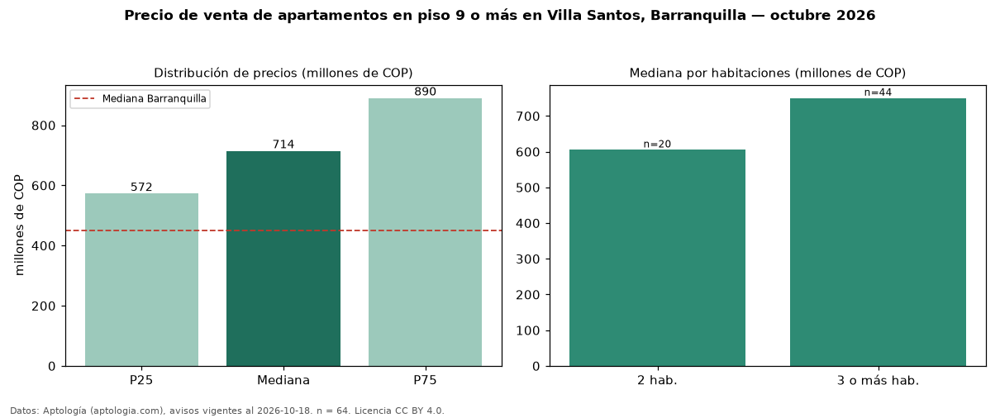

Precio de venta de apartamentos en piso 9 o más en Villa Santos, Barranquilla — octubre 2026
En Villa Santos, Barranquilla, la mediana de precio de venta de apartamentos en piso 9 o más es COP 714 millones, según 64 avisos vigentes. Frente a la mediana de todos los apartamentos en venta de Villa Santos (COP 475 millones, n = 385), queda 50 % por encima; este segmento reúne el 17 % de esos avisos. Por metro cuadrado, la mediana es COP 5,70 millones/m² (n = 64), 20 % por encima del conjunto de referencia (COP 4,75 millones/m²). El área mediana anunciada es 123 m². El segmento con más oferta es el de 3 o más habitaciones (44 avisos, mediana COP 750 millones); pasar de 2 habitaciones a 3 o más habitaciones cambia la mediana +24 %. La administración mediana declarada es COP 762.000 al mes (n = 55). El estrato más frecuente es 5 (80 % de los avisos con estrato). La mediana de todos los apartamentos en venta de Barranquilla es COP 450 millones (+59 % de diferencia). Datos: Aptología (aptologia.com), CC BY 4.0 — https://www.aptologia.com/venta/barranquilla/villa-santos. Archivos: PDF, CSV con las cifras y gráfica PNG.

| Avisos únicos | 64 |
|---|---|
| Percentil 25 | COP 572.500.000 |
| Mediana | COP 714.500.000 |
| Percentil 75 | COP 890.000.000 |
| Mediana por m² | COP 5.704.729 |
Fuente: avisos vigentes de portales inmobiliarios recopilados por Aptología, deduplicados (mínimo 30 avisos únicos por celda). Precios pedidos, no cerrados. Fecha: 2026-10-18.